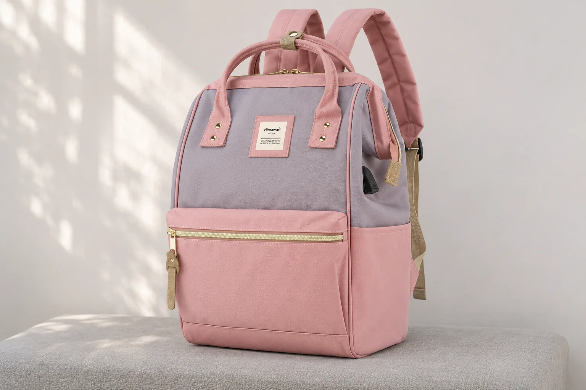
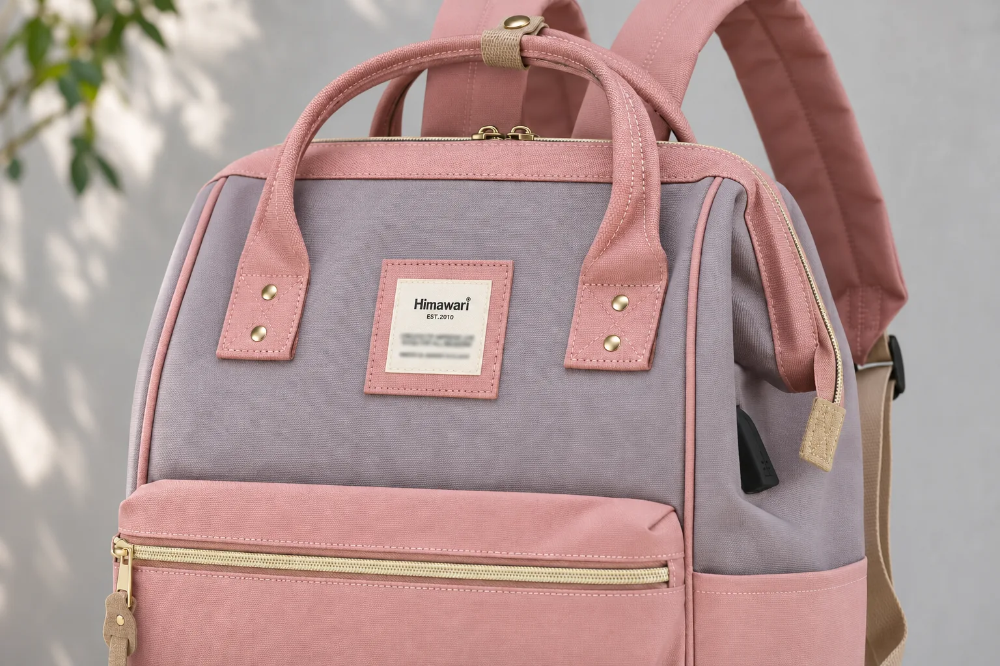
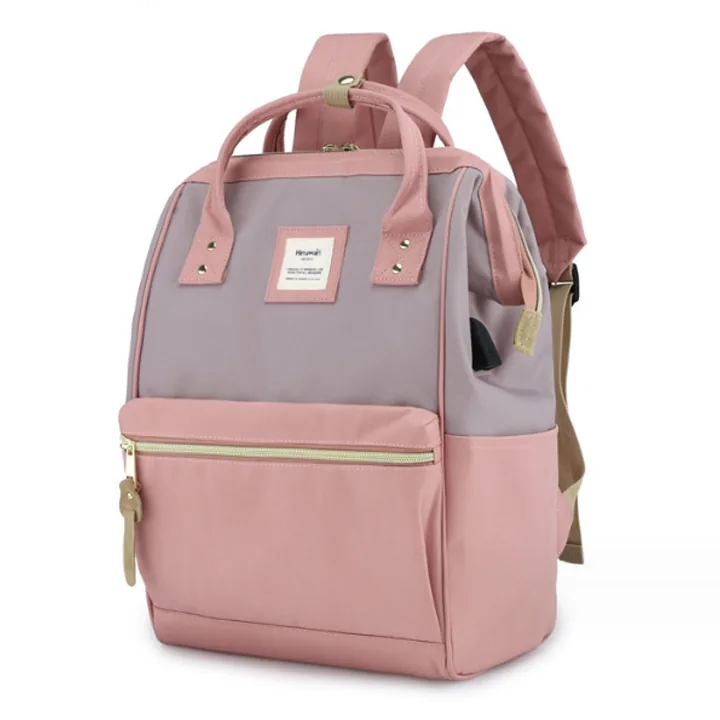

백팩 로고 라벨 모서리가 들뜨면 바로 붙여도 될까

백팩의 앞면을 정리하다가 로고 라벨 한 귀퉁이에 얇은 그림자가 보이면 손가락으로 눌러 보고 싶어집니다. 라벨 모서리가 올라온 건지 뒤쪽 원단이 접힌 건지부터 살펴보면 손을 댈 필요가 없는 경우도 구분할 수 있습니다. 라벨이 들떴다면 제품에 사용해도 되는지 확인하지 못한 접착제나 열로 가장자리를 붙이기 전에 들뜬 범위와 라벨 주변 원단의 상태부터 살펴보세요. 같은 모서리에 보인 그림자라도 어느 쪽 면이 움직이느냐에 따라 남길 기록이 달라집니다.
예로 든 No.9001 핑크그레이의 실제 제품 사진에는 회색빛 윗몸판 위에 분홍색 테두리와 밝은 가운데 면이 있는 사각 라벨이 보입니다. 양옆에는 분홍 손잡이 받침과 작은 금속 부품이 있습니다. 멀리서 보면 라벨과 몸판이 거의 평평하게 보이지만 이 사진으로 라벨 안쪽의 부착 방법이나 사용된 약품을 확인할 수는 없습니다. 공개된 28×40×17cm는 가방의 외부 치수입니다. 실제 가방을 살펴볼 때 라벨 위치를 참고하는 사진입니다. 이 제품에서 들뜸이 확인된 건 아닙니다.
빛을 옮겼더니 그림자가 움직이면 정상일까
한쪽에서 빛을 비췄을 때만 그림자가 선명해졌다고 정상인지 손상인지 바로 판단하기는 어렵습니다. 가방 안을 비우고 라벨을 누르지 않은 상태에서 앞면과 사선 방향을 번갈아 봅니다. 이때 라벨 바로 아래 몸판의 주름이 그대로 이어지는지, 라벨 바깥의 천이 골을 만들고 있는지 확인합니다. 빛을 옮길 때 그림자의 방향은 달라질 수 있으므로 라벨 가장자리와 아래쪽 면 사이가 실제로 떨어져 보이는지도 따로 살펴야 합니다.
사진은 눈에 보이는 방향으로만 찍습니다. 모서리 아래를 보여 주겠다며 손톱이나 자를 넣으면 사진을 찍기 전과 뒤의 상태가 달라질 수 있습니다. 사선에서 찍은 사진에 라벨 밑이 벌어진 듯 보이면 정면 사진도 남깁니다. 정면 사진에는 몸판에서 라벨이 있는 위치가 드러납니다. 옆 사진에서는 라벨과 천이 맞닿는 부분의 높이를 살필 수 있습니다. 같은 곳을 두 각도에서 보면 분홍 테두리의 단차와 원래 없던 빈틈을 구분하기가 조금 수월합니다.

겉에서 실이 보이면 봉제로 고쳐도 될까
가장자리에 실이 있다고 라벨 전체를 어떻게 고정했는지 알 수는 없습니다. 특히 라벨의 테두리와 그 뒤로 보이는 몸판의 선이 가까우면 어느 면의 실인지 먼저 확인합니다. 모서리 쪽 한두 가닥이 눈에 띈다면 주변을 그대로 남겨 두고 달라진 위치를 찍을 수 있습니다. 튀어나온 실을 잡아 빼거나 가위로 바로 자르면 원래 위치를 설명하기 어려워지고 주변의 어느 부분에 이어진 실이었는지도 놓칠 수 있습니다.
실이 안 보여도 접착제를 써도 되는지는 알 수 없습니다. 라벨 가장자리에 바른 접착제가 바탕 원단에도 닿을 수 있습니다. 제품 안내에서 그 부위의 처리 방법을 확인했다면 안내에 따라 판단하면 됩니다. 안내가 없다면 지금 상태를 찍은 사진과 바뀐 시점을 정리해 문의하는 편이 좋습니다. 모서리를 붙이겠다고 위에 뜨거운 것을 대거나 임의로 꿰매기 전에 라벨과 옆 원단을 건드리지 않은 모습부터 살피세요.
다음 외출 전 어디까지 기록해야 하나
가방 전체가 보이는 사진 한 장과 모서리가 잘 보이는 사진 한두 장을 같은 날 찍습니다. 전체 사진에는 손잡이와 앞 포켓도 넣어 라벨의 위치를 알아볼 수 있게 합니다. 가까운 사진에는 온전해 보이는 반대쪽 모서리도 조금 넣으면 원래 사각 테두리의 두께나 색과 문제로 보이는 지점을 함께 보여 줄 수 있습니다. 제품명이 비슷한 다른 색의 라벨 사진보다는 지금 쓰는 옵션의 원래 제품 사진을 찾아 두는 편이 비교에 알맞습니다.
쓰는 동안 들뜬 범위가 커지는지 보려면 가방이 놓인 방향과 빛을 되도록 맞춥니다. 첫날에는 가방을 비웠고 둘째 날에는 꽉 채웠다면 같은 변화가 있더라도 눈에 띄는 정도가 달라질 수 있습니다. 손에 들었을 때만 선이 보인다면 가방을 들어 올린 자세와 평평한 곳에 둔 자세를 그대로 구분해 적습니다. 넓은 면을 무리하게 펴거나 모서리를 잡아당겨 차이를 크게 보여 줄 필요는 없습니다. 수정 전 모습을 남겨야 지금 어디를 보고 있는지 설명하기 쉽습니다.
들뜬 듯한 모서리가 외투나 옆에 둔 가방에 자꾸 닿는다면 밖으로 나온 부분이 무엇에 스치는지만 먼저 확인합니다. 라벨의 모서리를 덮겠다고 테이프를 몸판에 붙이면 다음 사진에서 원래 상태를 보기가 어려워집니다. 옷걸이 옆에서 앞면이 밀리는 자리라면 당분간 방향을 돌려 놓으세요. 다른 가방 밑에 포개 두었다면 위아래 대신 옆에 나란히 놓을 자리를 찾을 수 있습니다. 이렇게 두면 라벨을 덮거나 누르지 않고도 보관 중 닿는 일을 줄일 수 있습니다.

판매처에서 가방을 직접 보기 어렵다면 ‘로고가 떨어졌어요’라는 말에 설명을 덧붙여 주세요. 가방을 어떻게 뒀을 때 사각 라벨의 어느 귀퉁이가 들떠 보이는지 적으면 됩니다. 겉에서 확인한 흔적과 언제부터 달라졌는지까지 전하면 부착 방법이나 접수 가능 여부처럼 사진만으로 답하기 어려운 내용을 구체적으로 물을 수 있습니다. 가방 앞쪽의 장식 라벨 뒤에는 바탕 원단이 있습니다. 붙이는 제품을 고르기 전에 두 면 중 어디가 달라졌는지 살펴보세요.